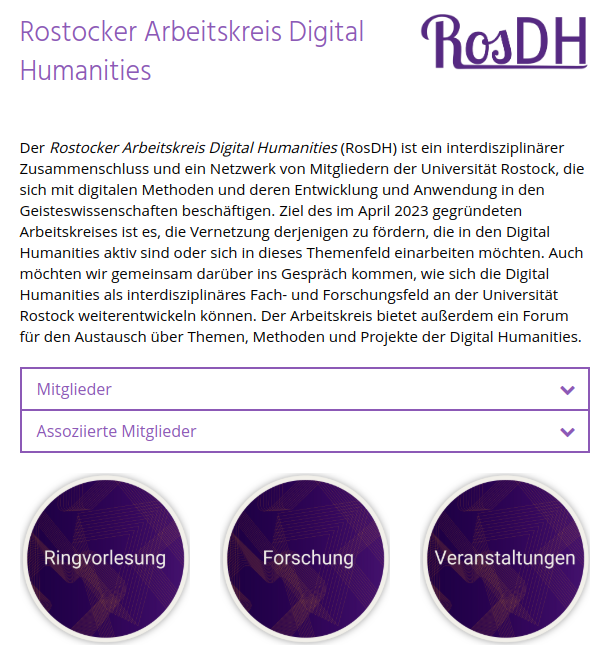
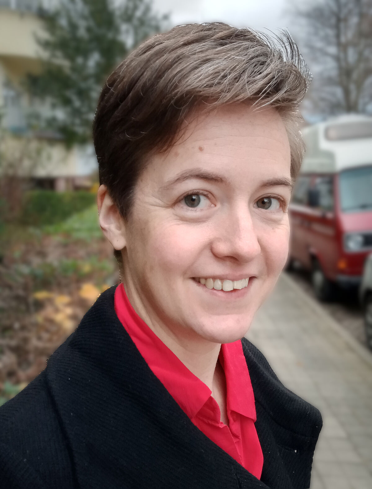
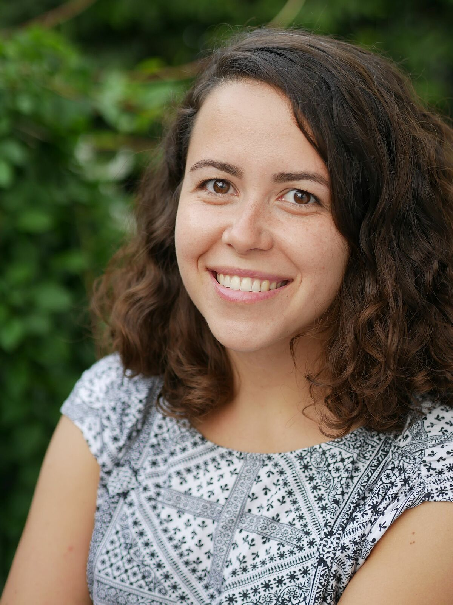
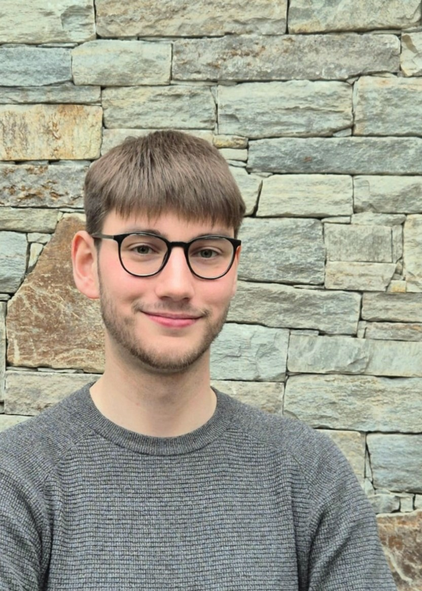
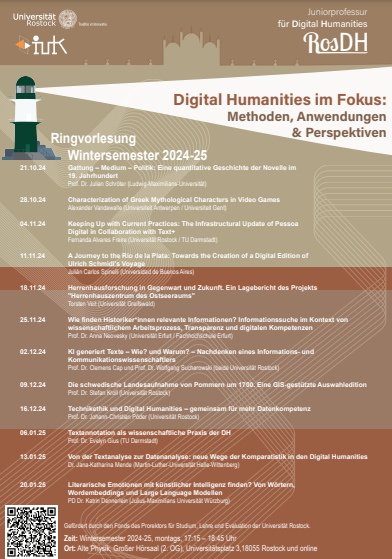
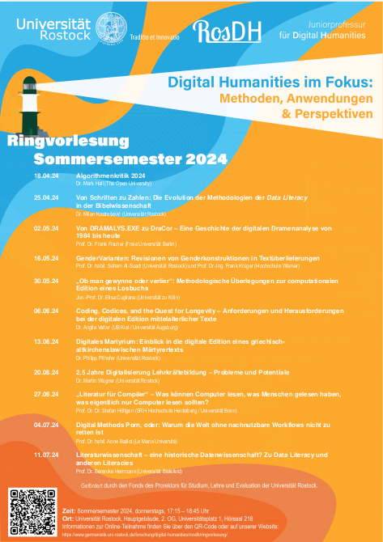
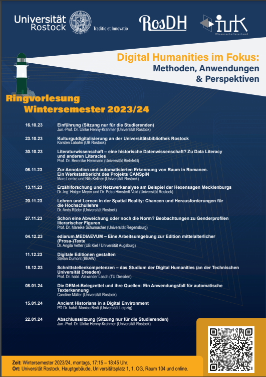
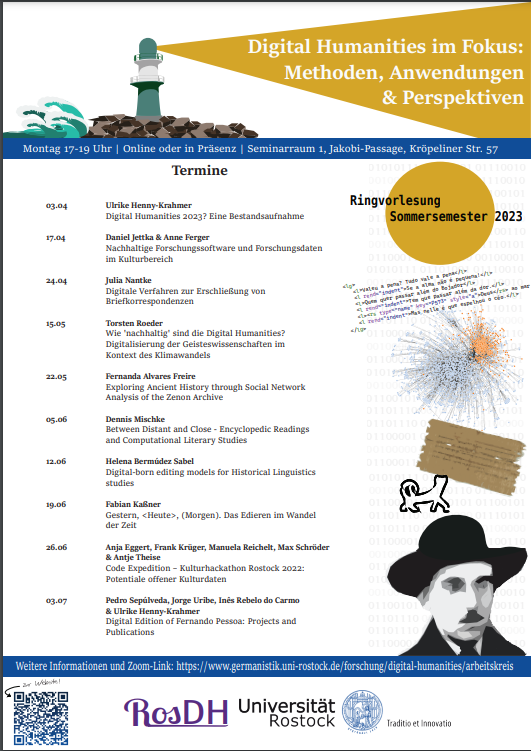

Der Rostocker Arbeitskreis
Digital Humanities (RosDH):
ein interdisziplinäres Netzwerk für die digitale Forschung in den Geisteswissenschaften
Ulrike Henny-Krahmer (Digital Humanities, Institut für Germanistik)
10. Februar 2025
Universität Rostock
Präsentation: https://hennyu.github.io/rosdh_25/
Überblick
- Was ist ?
- Wer ist ?
- Was tut ?
Was ist ?
Was ist ?
|  https://www.germanistik.uni-rostock.de/forschung/digital-humanities/rosdh/ |
|
Ziele von
|
Wer ist ?
Wer ist ?
|
   |
Was tut ?
Was tut ?
- Online-Treffen ca. 1x pro Semester
- Email-Verteiler
- Ringvorlesung: "Digital Humanities im Fokus: Methoden, Anwendungen und Perspektiven" (DH im Fokus), seit SoSe 2023
- Forschungsanträge/-projekte mit RosDH-Beteiligung
- Kontakt: phf.dh [at] uni-rostock.de
Ringvorlesung "DH im Fokus"
|  |  |  |  |
Projekt "Scanned Tables"
- Thema: Werkzeugunterstützung für die automatische Extraktion von Tabellendaten aus historischen Zeitschriften (am Beispiel des Swinemünder Badeanzeigers)
- Förderung durch NFDI Text+ (2024)
- Leitung: Prof. Dr. Frank Krüger (Hochschule Wismar)
- https://www.germanistik.uni-rostock.de/forschung/digital-humanities/rosdh/forschung/scannedtables/
Vielen Dank für die Aufmerksamkeit!
Präsentation:
https://hennyu.github.io/rosdh_25/